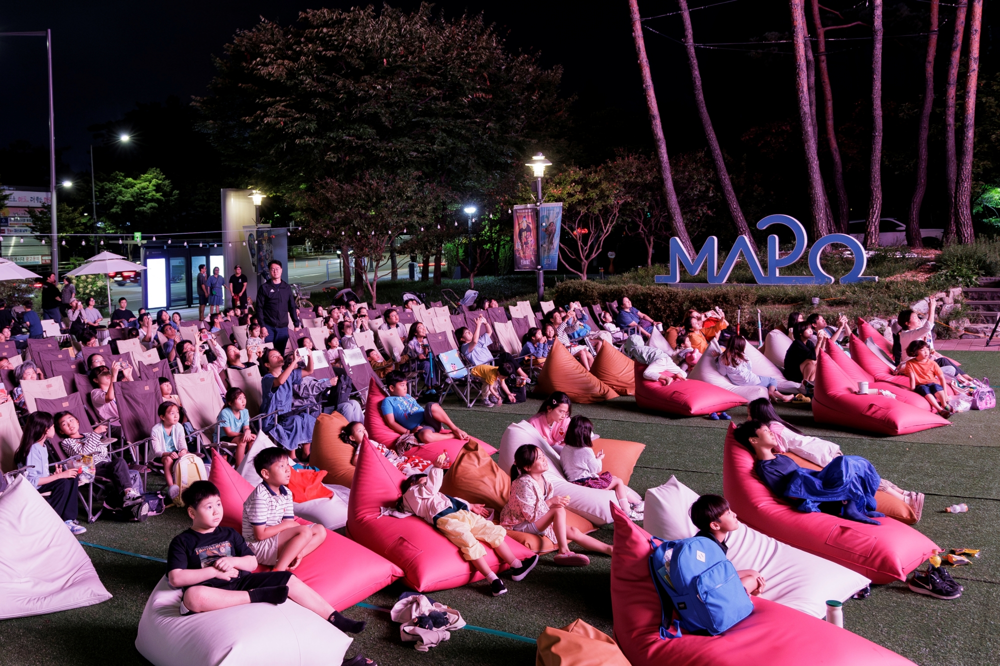

마포구, 9월 매주 금요일 '야금야금 시네마' 가족 야외 영화 행사
마포구청 광장 대형 미디어캔버스 활용, 회차별 150명 선착순

[시사포커스 / 김재록 기자] 9월의 매주 금요일 저녁, 마포구청 광장이 가족을 위한 야외 영화관으로 변신한다. 마포구(구청장 유동균)는 '온가족 야금야금(夜金夜金) 시네마'를 운영하고, 영화 관람에 참여할 가족을 선착순으로 모집한다고 마포구청은 밝혔다. 이 행사는 마포구청사 외벽에 설치된 대형 미디어캔버스를 활용해 영화를 상영하는 방식으로 진행된다. 금요일 밤(夜金)마다 가족과 함께 영화를 즐긴다는 의미를 담아 '야금야금'이라는 이름을 붙였다. 영화는 오후 7시부터 상영하며 회차별 150명씩 참여할 수 있다.
유동균 마포구청장은 "선선한 바람이 불기 시작하는 가을밤, 가족과 함께 영화를 보며 즐거운 시간을 보내시길 바란다"며 "마포 곳곳이 앞으로도 누구나 누릴 수 있는 문화의 장이 될 수 있도록 최선의 노력을 다하겠다"고 말했다. 상영작은 가족이 함께 관람하기 좋은 작품으로 구성됐다. 첫날인 9월 4일에는 올해 개봉해 1000만 관객을 돌파한 흥행작 '왕과 사는 남자'를 상영하고, 두 번째 주 금요일인 11일에는 어린이들에게 친숙한 영웅 '스파이더맨: 노 웨이 홈'을 선보인다. 마지막 상영일인 18일에는 환상적인 이야기와 음악이 어우러진 '알라딘'을 방영한다.
영화 상영에 앞서 어린이들을 위한 페이스페인팅, 캐리커처 체험과 함께 탭댄스, 마술, 재즈 등 다양한 공연도 펼쳐져 구청 광장을 찾은 가족들에게 즐거움을 더할 예정이다. 참여를 원하는 구민은 마포구청 누리집에 게시된 게시물의 QR코드를 통해 신청하면 된다. 행사는 9월 4일·11일·18일 총 3회에 걸쳐 진행된다.